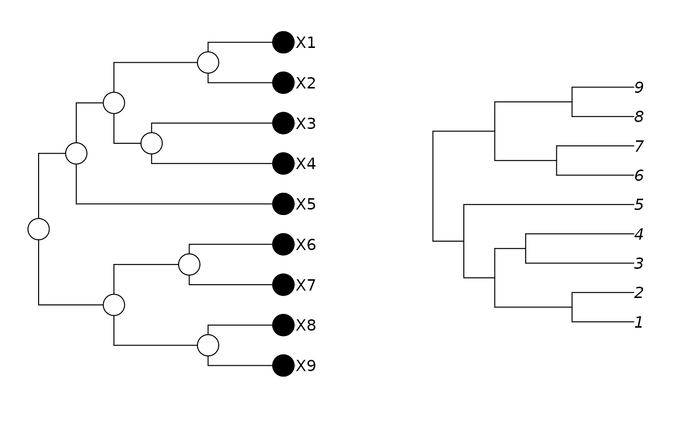

Phylogeny
phylog.RdCreate and use objects of class phylog. phylog.extract returns objects of class phylog. It extracts sub-trees from a tree. phylog.permut returns objects of class phylog. It creates the different representations compatible with tree topology.
Usage
# S3 method for class 'phylog'
print(x, ...)
phylog.extract(phylog, node, distance = TRUE)
phylog.permut(phylog, list.nodes = NULL, distance = TRUE)Arguments
- x, phylog
: an object of class
phylog- ...
: further arguments passed to or from other methods
- node
: a string of characters giving a node name. The functions extracts the tree rooted at this node.
- distance
: if TRUE, both functions retain branch lengths. If FALSE, they returns tree with arbitrary branch lengths (each branch length equals one)
- list.nodes
: a list which elements are vectors of string of character corresponding to direct descendants of nodes. This list defines one representation compatible with tree topology among the set of possibilities.
Value
Returns a list of class phylog :
- tre
: a character string of the phylogenetic tree in Newick format whithout branch length values
- leaves
: a vector which names corresponds to leaves and values gives the distance between leaves and nodes closest to these leaves
- nodes
: a vector which names corresponds to nodes and values gives the distance between nodes and nodes closest to these leaves
- parts
: a list which elements gives the direct descendants of each nodes
- paths
: a list which elements gives the path leading from the root to taxonomic units (leaves and nodes)
- droot
: a vector which names corresponds to taxonomic units and values gives distance between taxonomic units and the root
- call
: call
- Wmat
: a phylogenetic link matrix, generally called the covariance matrix. Matrix values \(Wmat_{ij}\) correspond to path length that lead from root to the first common ancestor of the two leaves i and j
- Wdist
: a phylogenetic distance matrix of class
'dist'. Matrix values \(Wdist_{ij}\) correspond to \(\sqrt{d_{ij}}\) where \(d_{ij}\) is the classical distance between two leaves i and j- Wvalues
: a vector with the eigen values of Wmat
- Wscores
: a data frame with eigen vectors of Wmat. This data frame defines an orthobasis that could be used to calculate the orthonormal decomposition of a biological trait on a tree.
- Amat
: a phylogenetic link matrix stemed from Abouheif's test and defined in Ollier et al. (submited)
- Avalues
: a vector with the eigen values of Amat
- Adim
: number of positive eigen values
- Ascores
: a data frame with eigen vectors of Amat. This data frame defines an orthobasis that could be used to calculate the orthonormal decomposition of a biological trait on a tree.
- Aparam
: a data frame with attributes associated to nodes.
- Bindica
: a data frame giving for some taxonomic units the partition of leaves that is associated to its
- Bscores
: a data frame giving an orthobasis defined by Ollier et al. (submited) that could be used to calculate the orthonormal decomposition of a biological trait on a tree.
- Bvalues
: a vector giving the degree of phylogenetic autocorrelation for each vectors of Bscores (Moran's form calculated with the matrix Wmat)
- Blabels
: a vector giving for each nodes the name of the vector of Bscores that is associated to its
References
Ollier, S., Couteron, P. and Chessel, D. (2006) Orthonormal transform to decompose the variance of a life-history trait across a phylogenetic tree. Biometrics Biometrics, 62, 2, 471–477.
Author
Daniel Chessel
Sébastien Ollier sebastien.ollier@u-psud.fr
Examples
marthans.tre <- NULL
marthans.tre[1] <-"((((1:4,2:4)a:5,(3:7,4:7)b:2)c:2,5:11)d:2,"
marthans.tre[2] <- "((6:5,7:5)e:4,(8:4,9:4)f:5)g:4);"
marthans.phylog <- newick2phylog(marthans.tre)
marthans.phylog
#> Phylogenetic tree with 9 leaves and 8 nodes
#> $class: phylog
#> $call: newick2phylog(x.tre = marthans.tre)
#> $tre: ((((X1,X2)a,(X3,X4)b)c,X5...,((X6,X7)e,(X8,X9)f)g)Root;
#>
#> class length content
#> $leaves numeric 9 length of the first preceeding adjacent edge
#> $nodes numeric 8 length of the first preceeding adjacent edge
#> $parts list 8 subsets of descendant nodes
#> $paths list 17 path from root to node or leave
#> $droot numeric 17 distance to root
#>
#> class dim content
#> $Wmat matrix 9-9 W matrix : root to the closest ancestor
#> $Wdist dist 36 Nodal distances
#> $Wvalues numeric 8 Eigen values of QWQ/sum(Q)
#> $Wscores data.frame 9-8 Eigen vectors of QWQ '1/n' normed
#> $Amat matrix 9-9 Topological proximity matrix A
#> $Avalues numeric 8 Eigen values of QAQ matrix
#> $Adim integer 1 number of positive eigen values of QAQ
#> $Ascores data.frame 9-8 Eigen vectors of QAQ '1/n' normed
#> $Aparam data.frame 8-3 Topological indices for nodes
#> $Bindica data.frame 9-8 class indicator from nodes
#> $Bscores data.frame 9-8 Topological orthonormal basis '1/n' normed
#> $Blabels character 8 Nodes labelling from orthonormal basis
if(requireNamespace("ape", quietly = TRUE)) {
marthans.phylo <- ape::read.tree(text = marthans.tre)
marthans.phylo
par(mfrow = c(1, 2))
plot(marthans.phylog, cnode = 3, f = 0.8, cle = 3)
plot(marthans.phylo)
par(mfrow = c(1, 1))
}
